Tot nog toe hebben we ons geconcentreerd op het beschrijven van een associatie tussen een uitkomst \(Y\) en één enkele predictor \(X\). Vaak is het echter nuttig om de gemiddelde uitkomst niet in termen van één, maar in termen van meerdere predictoren simultaan te beschrijven. De volgende voorbeelden illustreren waarom:
Vaak is de associatie tussen een verklarende variabele X en een uitkomst Y verstoord als gevolg van een confounder C. Bijvoorbeeld, bij het bepalen van het effect van de duur van blootstelling aan asbest (X) op de longfunctie (Y), is leeftijd (C) een confounder omdat het zowel de duur van blootstelling als de longfunctie beïnvloedt. Om hiervoor te corrigeren, is het noodzakelijk om de associatie tussen X en Y afzonderlijk te beschrijven voor mensen van dezelfde leeftijd (m.a.w. individuen met dezelfde waarde voor de confounder). Voor elke geobserveerde leeftijd (C=c) een aparte lineaire regressie uitvoeren onder mensen van die leeftijd (C=c), is weinig zinvol omdat er vaak weinig mensen met exact dezelfde leeftijd in de studie opgenomen zijn. Dit is in het bijzonder zo wanneer er meerdere confounders zijn. In deze sectie zullen we dit probleem oplossen door de confounder C als extra variabele in het lineaire model op te nemen.
In heel wat studies is men geïnteresseerd in welke van een groep variabelen een gegeven uitkomst het meest beïnvloedt. Bijvoorbeeld, het begrijpen van welke aspecten van habitat en menselijke activiteit een voorname impact hebben op de biodiversiteit in het regenwoud is een belangrijk streefdoel van de conservatie-biologie. Daartoe wil men niet alleen de grootte van het woud in rekening brengen, maar ook andere factoren, zoals de ouderdom en hoogteligging van het woud, de nabijheid van andere wouden, … Een studie van het simultane effect van die verschillende variabelen laat toe om beter inzicht te krijgen in de variatie in biodiversiteit tussen verschillende wouden. Door in het bijzonder wouden met hoge of lage biodiversiteit nader te bekijken, kan men nieuwe predictieve factoren voor biodiversiteit ontdekken.
Wanneer men een uitkomst wil voorspellen voor individuen, is het belangrijk om veel predictieve informatie voor hen beschikbaar te hebben en die informatie simultaan in een regressiemodel te kunnen gebruiken. Bijvoorbeeld, na behandeling van patiënten met gevorderde borstkanker is de prognose zeer onzeker. Op basis van gemeten predictoren voor en na de operatie kan men echter regressiemodellen opbouwen die toelaten om in de toekomst voor elke patiënt, op basis van zijn/haar karakteristieken, de prognose te voorspellen. Verwante predicties (maar dan voor het risico op sterfte) worden dagdagelijks gebruikt in eenheden intensieve zorgen om de ernst van de gezondheidstoestand van een patiënt uit te drukken. Het spreekt voor zich dat betere predicties kunnen gemaakt worden wanneer een groot aantal predictoren simultaan worden in rekening gebracht.
In dit hoofdstuk breiden we daarom enkelvoudige lineaire regressie (Hoofdstuk 7) uit door meerdere predictoren toe te laten. We zullen dus de gemiddelde uitkomsten modelleren als een functie van meerdere predictoren. We illustreren meervoudige lineaire regressie aan de hand van de prostaatkanker dataset.
11.1.1 Prostaatkanker dataset
Stamey et al., 1989, bestudeerden het niveau van het prostaat specific antigen (PSA) en een aantal klinische metingen bij 97 mannen waarvan de prostaat werd verwijderd. Het doel van de studie is om de associatie van de PSA te bestuderen in functie van het tumorvolume (lcavol), het gewicht van de prostaat (lweight), leeftijd (age), de goedaardige prostaathypertrofie hoeveelheid (lbph), een indicator voor de aantasting van de zaadblaasjes (svi), capsulaire penetratie (lcp), Gleason score (gleason) die de graad van kwaadaardigheid van de kanker weergeeft (hoe hoger de score hoe minder de kankercellen op normaal prostaatweefsel lijken), en, het precentage gleason score 4/5 (pgg45), die de proportie aangeeft van de tumor die ingenomen wordt door kankerweefsel van een hoge graad. De onderzoekers die de dataset verspreidden hebben het tumorvolume, het gewicht, de goedaardige prostraat hypertrofie hoeveelheid en de capsulaire penetratie reeds log-getransformeerd.
Figuur 11.1: Scatterplot matrix voor de observaties in de prostaat kanker dataset.
Figuur 11.1 toont de scatter matrix van de data en suggereert dat de lpsa sterk positief gecorreleerd is met het volume en svi. We zien verder dat lcp en lbph links-gecensureerd lijken te zijn. Er lijkt een ondergrens/detectielimiet te zijn voor deze metingen. Verder blijkt het merendeel van de gleason scores gelijk te zijn aan 6 of 7. We zullen de analyse in dit hoofdstuk beperken tot de associatie van lpsa met het log tumorvolume (lcavol), het log gewicht (lweight) en de aantasting van de zaadblaasjes (svi).
11.2 Het additieve meervoudig lineaire regressie model
Afzonderlijke lineaire regressiemodellen, zoals
\[E(Y|X_v)=\alpha+\beta_v X_v\]
laten enkel toe om de associatie tussen de prostaat specifieke antigeen concentratie te evalueren op basis van 1 variabele, bijvoorbeeld het log-tumorvolume. Het spreekt voor zich dat meer accurate predicties kunnen bekomen worden door meerdere predictoren simultaan in rekening te brengen. Bovendien geeft de parameter \(\beta_v\) in dit model mogelijks geen zuiver effect van het tumorvolume weer. Inderdaad, \(\beta_v\) is het gemiddeld verschil in log-psa voor patiënten die 1 eenheid in het log tumorvolume (lcavol) verschillen. Zelfs als lcavol niet is geassocieerd met het lpsa, dan nog kunnen patiënten met een groter tumorvolume een hoger lpsa hebben omdat ze bijvoorbeeld een aantasting van de zaadblaasjes hebben (svi status 1). Dit is een probleem van confounding (nl. het effect van lcavol wordt verward met het effect van svi) dat kan verholpen worden door patiënten te vergelijken met verschillend log-tumorvolume, maar met dezelfde status voor svi. We zullen in dit hoofdstuk aantonen dat meervoudige lineaire regressiemodellen dit op een natuurlijke wijze mogelijk maken.
11.2.1 Statistisch model
De techniek die we hiertoe gaan gebruiken heet meervoudige lineaire regressie, in tegenstelling tot enkelvoudige lineaire regressie die we eerder gebruikt hebben. Stel dat we \(p-1\) verklarende variabelen \(X_1,...,X_{p-1}\) en een uitkomst \(Y\) beschikbaar hebben voor \(n\) subjecten. Stel bovendien dat de gemiddelde uitkomst lineair kan beschreven worden in functie van deze verklarende variabelen; d.w.z.
waarbij \(\beta_0,\beta_1,...,\beta_{p-1}\) onbekende parameters zijn en \(\epsilon_i\) de residuen die niet kunnen worden verklaard a.d.h.v. de predictoren. Het principe van de kleinste kwadratenmethode kan ook voor dit model worden gebruikt om schatters te bekomen voor de onbekende parameters \(\beta_0, \ldots, \beta_{p-1}\). De formules voor deze schattingen zijn nu een stuk complexer dan voorheen, maar worden door de software automatisch uitgerekend. Voor gegeven schattingen \(\hat{\beta}_0,\hat{\beta}_1,...,\hat{\beta}_{p-1}\) laat het lineaire regressiemodel dan toe om:
de verwachte uitkomst te voorspellen voor subjecten met gegeven waarden \(x_1,...,x_{p-1}\) voor de verklarende variabelen. Dit kan geschat worden als
na te gaan in welke mate de gemiddelde uitkomst verschilt tussen 2 groepen subjecten met \(\delta\) eenheden verschil in een verklarende variabele \(X_j\) met \(j=1,\ldots,p\), maar met dezelfde waarden voor alle andere variabelen \(\{X_k,k=1,...,p,k\ne j\}\). Namelijk:
In het bijzonder kan \(\beta_j\) geïnterpreteerd worden als het verschil in gemiddelde uitkomst tussen subjecten die 1 eenheid verschillen in de waarde van \(X_j\), maar dezelfde waarde hebben van de overige verklarende variabelen in het model. Dit kan geschat worden als \(\hat{\beta}_j\).
Voor het prostaatkanker voorbeeld levert een analyse van het enkelvoudige lineaire regressiemodel \(E(Y|X_v)=\beta_0+\beta_v X_v\) in R de volgende output.
lmV <-lm(lpsa ~ lcavol, prostate)summary(lmV)
Call:
lm(formula = lpsa ~ lcavol, data = prostate)
Residuals:
Min 1Q Median 3Q Max
-1.67624 -0.41648 0.09859 0.50709 1.89672
Coefficients:
Estimate Std. Error t value Pr(>|t|)
(Intercept) 1.50730 0.12194 12.36 <2e-16 ***
lcavol 0.71932 0.06819 10.55 <2e-16 ***
---
Signif. codes: 0 '***' 0.001 '**' 0.01 '*' 0.05 '.' 0.1 ' ' 1
Residual standard error: 0.7875 on 95 degrees of freedom
Multiple R-squared: 0.5394, Adjusted R-squared: 0.5346
F-statistic: 111.3 on 1 and 95 DF, p-value: < 2.2e-16
We besluiten op basis van deze gegevens dat patiënten met een tumorvolume dat 1% hoger ligt, gemiddeld gezien een prostaat antigeen concentratie zullen hebben die ongeveer 0.72% hoger zal liggen. Merk op dat we voor deze interpretatie beroep hebben gedaan op het feit dat beide variabelen log getransformeerd zijn.
Een analyse van het meervoudige lineaire regressiemodel met de predictoren lcavol (index v), lweight (index w) en svi (index s)
Call:
lm(formula = lpsa ~ lcavol + lweight + svi, data = prostate)
Residuals:
Min 1Q Median 3Q Max
-1.72966 -0.45767 0.02814 0.46404 1.57012
Coefficients:
Estimate Std. Error t value Pr(>|t|)
(Intercept) -0.26807 0.54350 -0.493 0.62301
lcavol 0.55164 0.07467 7.388 6.3e-11 ***
lweight 0.50854 0.15017 3.386 0.00104 **
sviinvasion 0.66616 0.20978 3.176 0.00203 **
---
Signif. codes: 0 '***' 0.001 '**' 0.01 '*' 0.05 '.' 0.1 ' ' 1
Residual standard error: 0.7168 on 93 degrees of freedom
Multiple R-squared: 0.6264, Adjusted R-squared: 0.6144
F-statistic: 51.99 on 3 and 93 DF, p-value: < 2.2e-16
De parameter bij lcavol geeft nu aan dat patiënten met een tumorvolume dat 1% hoger ligt, maar eenzelfde prostaat gewicht en svi status hebben, een prostaat antigeen concentratie zullen hebben dat gemiddeld slechts 0.55% hoger ligt. De reden dat we eerder een verschil van meer dan 0.7% vonden, kan worden verklaard doordat patiënten met een verschil in tumorvolume vaak ook verschillen in prostaat gewicht en svi status.
De parameter voor svi kunnen we als volgt interpreteren: de prostaat antigeen concentratie ligt gemiddeld een factor exp(0.666)=1.95 hoger voor patiënten met invasie van de zaadblaasjes dan voor patiënten zonder invasie van de zaadblaasjes na correctie voor het prostaat gewicht en het tumorvolume. De introductie van de factor svi in het additieve model zorgt ervoor dat we twee regressievlakken bekomen die evenwijdig zijn maar een verschillend intercept hebben (zie Figuur 11.2).
De \(R^2\)-waarde in bovenstaande analyse bedraagt 62.6% en geeft aan 62.6% in de variabiliteit van het log-PSA verklaard kan worden d.m.v. het tumorvolume, het prostaat gewicht en de status van de zaadblaasjes.
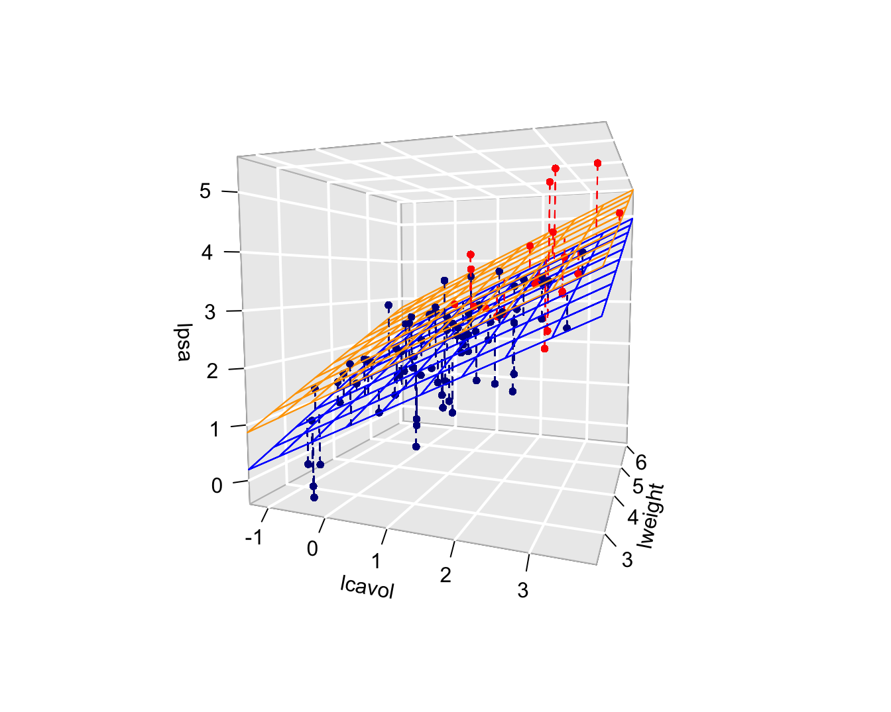
Figuur 11.2: Fit van het additieve model met termen lcavol, lweight en svi. De figuur geeft duidelijk weer dat de gemiddelde lpsa toeneemt i.f.v. het log-tumorvolume, het log-prostaatgewicht en de invasie van de zaadblaasjes. Merk op dat de fit resulteert in twee parallele vlakken, een regressievlak voor patiënten zonder (blauw) en met invasie van de zaadblaasjes (oranje).
11.3 Besluitvorming in regressiemodellen
Als de gegevens representatief zijn voor de populatie kan men in de meervoudige lineaire regressiecontext eveneens aantonen dat de kleinste kwadraten schatters voor het intercept en de hellingen onvertekend zijn, m.a.w
\[E[\hat \beta_j]=\beta_j,\quad j=0,\ldots,p-1.\]
Het feit dat de schatters gemiddeld (over een groot aantal vergelijkbare studies) niet afwijken van de waarden in de populatie, impliceert niet dat ze niet rond die waarde variëren. Om inzicht te krijgen hoe dicht we de parameterschatters bij het werkelijke intercept \(\beta_0\) en de werkelijke hellingen \(\beta_j\) mogen verwachten, wensen we bijgevolg ook haar variabiliteit te kennen.
Net zoals in Hoofdstuk 7 is het op basis van de puntschatters voor de hellingen niet duidelijk of de verbanden werkelijk voorkomen in de populatie of indien we de verbanden door toeval hebben geobserveerd in de dataset. De schatting van de hellingen is immers onnauwkeurig en zal variëren van steekproef tot steekproef. Zoals steeds is het resultaat van een data-analyse dus niet interpreteerbaar zonder die variabiliteit in kaart te brengen.
Om de resultaten uit de steekproef te kunnen veralgemenen naar de populatie zullen we in deze context eveneens inzicht nodig hebben op de verdeling van de parameterschatters. Om op basis van slechts één steekproef te kunnen voorspellen hoe de parameterschatters variëren van steekproef tot steekproef zullen we naast de onderstelling van
Lineariteit
bijkomende aannames moeten maken over de verdeling van de gegevens, met name
Onafhankelijkheid: de metingen \((X_{11},\dots, X_{1p-1}, Y_1), ..., (X_{n1},\ldots,X_{np-1},Y_n)\) werden gemaakt bij n onafhankelijke subjecten/observationele eenheden
Homoscedasticiteit of gelijkheid van variantie: de observaties variëren met een gelijke variantie rond het regressievlak. De residuen \(\epsilon_i\) hebben dus een gelijke variantie \(\sigma^2\) voor elk covariaat patroon \((X_1=x_1, ..., X_{p-1}=x_{p-1})\). Dat impliceert ook dat de conditionele variantie van \(Y\) gegeven \(X_1,\ldots,X_{p-1}\), \(\text{var}(Y\vert X_1,\ldots,X_{p-1})\) dus gelijk is, met name \(\text{var}(Y\vert X_1,\ldots,X_{p-1}) = \sigma^2\) voor elk covariaat patroon \((X_1=x_1, ..., X_{p-1}=x_{p-1})\). De constante \(\sigma\) wordt opnieuw de residuele standaarddeviatie genoemd.
Normaliteit: de residuen \(\epsilon_i\) zijn normaal verdeeld.
Uit aannames 2, 3 en 4 volgt dus dat de residuen \(\epsilon_i\) onafhankelijk zijn en dat ze allen eenzelfde Normale verdeling volgen
\[\epsilon_i \sim N(0,\sigma^2).\]
Als we ook steunen op de veronderstelling van lineariteit weten we dat de originele observaties conditioneel op \(X_1,\ldots,X_{p-1}\) eveneens Normaal verdeeld zijn
met een gemiddelde dat varieert in functie van de waarde van de onafhankelijke variabelen \(X_{i1},\ldots,X_{ip-1}\).
Merk op dat de onzekerheid op de hellingen af zal nemen wanneer er meer observaties zijn en/of wanneer de observaties meer gespreid zijn. Voor het opzetten van een experiment kan dit belangrijke informatie zijn. Uiteraard wordt de precisie ook beïnvloed door de grootte van de variabiliteit van de observaties rond het regressievlak, \(\sigma^2\), maar dat heeft een onderzoeker typisch niet in de hand.
De conditionele variantie (\(\sigma^2\)) is echter niet gekend en is noodzakelijk voor de berekening van de variantie op de parameterschatters. We kunnen \(\sigma^2\) echter opnieuw schatten op basis van de mean squared error (MSE):
Analoog als in Hoofdstuk 7 kunnen we opnieuw toetsen en betrouwbaarheidsintervallen construeren op basis van de teststatistieken
\[T_k=\frac{\hat{\beta}_k-\beta_k}{SE(\hat{\beta}_k)} \text{ met } k=0, \ldots, p-1.\]
Als aan alle aannames is voldaan dan volgen deze statistieken \(T_k\) een t-verdeling met \(n-p\) vrijheidsgraden. Wanneer niet is voldaan aan de veronderstelling van normaliteit maar wel aan lineariteit, onafhankelijkheid en homoscedasticiteit dan kunnen we voor inferentie opnieuw beroep doen op de centrale limietstelling die zegt dat de statistiek \(T_k\) bij benadering een standaard Normale verdeling zal volgen wanneer het aantal observaties voldoende groot is.
Voor het prostaatkanker voorbeeld kunnen we de effecten in de steekproef opnieuw veralgemenen naar de populatie toe door betrouwbaarheidsintervallen te bouwen voor de hellingen:
Gezien nul niet in de intervallen ligt weten we eveneens dat de associaties tussen lpsa \(\leftrightarrow\) lcavol, lpsa \(\leftrightarrow\) lweight, lpsa \(\leftrightarrow\) svi, statistisch significant zijn op het 5% significantieniveau.
Anderzijds kunnen we ook formele hypothesetoetsen uitvoeren. Onder de nulhypothese veronderstellen we dat er geen associatie is tussen lpsa en de predictor \(X_j\):
\[H_0: \beta_j=0\]
en onder de alternatieve hypothese is er een associatie tussen response en predictor \(X_j\):
\[H_1: \beta_j\neq0\]
Met de test statistiek
\[T=\frac{\hat{\beta}_j-0}{SE(\hat{\beta}_j)}\]
kunnen we de nulhypothese falsifiëren. Onder \(H_0\) volgt de statistiek een t-verdeling met \(n-p\) vrijheidsgraden, waarbij p het aantal model parameters is van het regressiemodel inclusief het intercept.
Deze tweezijdige testen zijn standaard geïmplementeerd in de standaard output van R.
summary(lmVWS)
Call:
lm(formula = lpsa ~ lcavol + lweight + svi, data = prostate)
Residuals:
Min 1Q Median 3Q Max
-1.72966 -0.45767 0.02814 0.46404 1.57012
Coefficients:
Estimate Std. Error t value Pr(>|t|)
(Intercept) -0.26807 0.54350 -0.493 0.62301
lcavol 0.55164 0.07467 7.388 6.3e-11 ***
lweight 0.50854 0.15017 3.386 0.00104 **
sviinvasion 0.66616 0.20978 3.176 0.00203 **
---
Signif. codes: 0 '***' 0.001 '**' 0.01 '*' 0.05 '.' 0.1 ' ' 1
Residual standard error: 0.7168 on 93 degrees of freedom
Multiple R-squared: 0.6264, Adjusted R-squared: 0.6144
F-statistic: 51.99 on 3 and 93 DF, p-value: < 2.2e-16
De testen geven weer dat de associaties tussen lpsa\(\leftrightarrow\)lcavol, lpsa\(\leftrightarrow\)lweight en lpsa\(\leftrightarrow\)svi, respectievelijk extreem significant (\(p << 0.001\)) en sterk significant (\(p=0.001\) en \(p=0.002\)) zijn.
11.4 Nagaan van modelveronderstellingen
Voor de statistische besluitvorming hebben we volgende aannames gedaan
Lineariteit
Onafhankelijkheid
Homoscedasticiteit
Normaliteit
Onafhankelijkheid is moeilijk te verifiëren op basis van de data, dat zou gegarandeerd moeten zijn door het design van de studie. Als we afwijkingen zien van lineariteit dan heeft besluitvorming geen zin gezien het de primaire veronderstelling is. In dat geval moeten we het conditioneel gemiddelde eerst beter modelleren. In geval van lineariteit maar schendingen van homoscedasticiteit of normaliteit dan weten we dat de besluitvorming mogelijks incorrect is omdat de teststatistieken dan niet langer een t-verdeling volgen.
11.4.1 Lineariteit
De primaire veronderstelling in meervoudige lineaire regressie-analyse is de aanname dat de uitkomst (afhankelijke variabele) lineair varieert in functie van de verklarende variabelen.
Afwijkingen van lineariteit kunnen opnieuw worden opgespoord d.m.v. een residuplot. Deze wordt weergegeven in Figuur 11.3 links boven. Als de veronderstelling van lineariteit opgaat, krijgt men in een residuplot geen patroon te zien. De residuen zijn immers gemiddeld nul voor elke waarde van de predictoren en zouden dus mooi rond nul moeten variëren. Dat is inderdaad het geval voor het meervoudig lineaire regressiemodel dat we hebben gefit o.b.v. de prostaat dataset.
par(mfrow=c(2,2))plot(lmVWS)
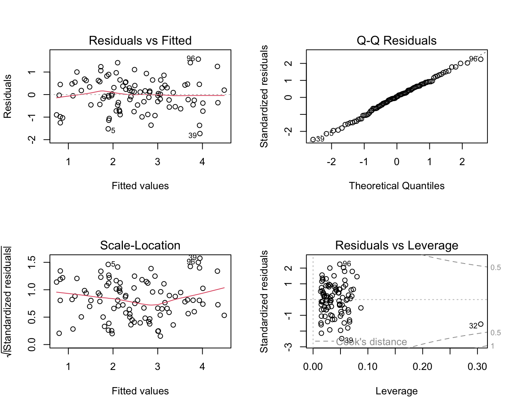
Figuur 11.3: Diagnostische plots voor het nagaan van de veronderstellingen van het lineair regressiemodel waarbij lpsa gemodelleerd wordt a.d.h.v. de predictoren lcavol, lweight en svi.
11.4.2 Homoscedasticiteit
De residu-plot kan opnieuw worden gebruikt om de veronderstelling na te gaan van homoscedasticiteit of gelijkheid van variantie. De residu-plot voor het prostaatkanker voorbeeld Figuur 11.3 links boven geeft geen afwijkingen weer van homoscedasiticiteit. Alle residuen zijn mooi gespreid binnen dezelfde grenzen voor elke gefitte waarde \(\hat y_i\). De plot van de vierkantswortel van de absolute waarde van de gestandardiseerde error \(\sqrt{|e_i|/\sqrt{MSE}}\) in functie van de predicties (Figuur 11.3 links onder) geeft ook geen afwijkingen van homoscedasticiteit weer.
11.4.3 Normaliteit
Opnieuw kunnen we de veronderstelling van normaliteit nagaan door gebruik te maken van QQ-plots. Figuur 11.3 rechts boven geeft de QQ-plot weer van de residuen voor het prostaatkanker voorbeeld. We zien in de plot geen aanwijzing voor afwijkingen van normaliteit.
11.5 Het niet-additieve meervoudig lineair regressiemodel
11.5.1 Interactie tussen continue variabele en factor variabele
We breiden het meervoudig lineaire regressie model nu uit door toevoeging van interactie-termen.
Het model in de vorige secties werd een additief model genoemd omdat de bijdrage van het kanker volume in lpsa niet afhangt van de hoogte van het prostaat gewicht en de status van de zaadblaasjes. De helling voor lcavol hangt m.a.w. niet af van de hoogte van het log prostaat gewicht en de status van de zaadblaasjes.
De svi status en de hoogte van het log-prostaatgewicht (\(x_w\)) heeft geen invloed op de bijdrage van het log-tumorvolume (\(x_v\)) in de gemiddelde log-prostaat antigeen concentratie en vice versa.
Het zou nu echter kunnen zijn dat de associatie tussen lpsa en lcavol, en tussen lpsa en log-prostaatgewicht wel afhangt van de status van de zaadblaasjes. De gemiddelde toename in lpsa tussen patiënten die één eenheid in het log-tumorvolume verschillen zou bijvoorbeeld lager kunnen zijn voor patiënten met een aangetaste zaadblaasjes dan bij patiënten waarvan de zaadblaasjes niet zijn aangetast. De associatie van het tumorvolume en de prostaat antigeen concentratie hangt in dit geval af van de status van de zaadblaasjes.
Om een dergelijke of tussen 2 variabelen \(X_v\) en \(X_s\) enerzijds en tussen \(X_w\) en \(X_s\) anderzijds statistisch te modelleren kan men producten van de variabelen in kwestie aan het model toevoegen:
Deze termen kwantificeren de interactie-effecten van respectievelijk de predictoren \(x_v\) en \(x_s\); en van \(x_w\) en \(x_s\) op de gemiddelde uitkomst. In dit model worden de termen \(\beta_vx_{iv}\), \(\beta_wx_{iw}\) en \(\beta_sx_{is}\) dikwijls de hoofdeffecten van de predictoren \(x_v\), \(x_w\) en \(x_s\) genoemd.
We schatten dit model nu in R. De interacties worden toegevoegd door een term toe te voegen in de formule met de naam van twee variabelen die wordt gescheiden door een :.
Call:
lm(formula = lpsa ~ lcavol + lweight + svi + svi:lcavol + svi:lweight,
data = prostate)
Residuals:
Min 1Q Median 3Q Max
-1.50902 -0.44807 0.06455 0.45657 1.54354
Coefficients:
Estimate Std. Error t value Pr(>|t|)
(Intercept) -0.52642 0.56793 -0.927 0.356422
lcavol 0.54060 0.07821 6.912 6.38e-10 ***
lweight 0.58292 0.15699 3.713 0.000353 ***
sviinvasion 3.43653 1.93954 1.772 0.079771 .
lcavol:sviinvasion 0.13467 0.25550 0.527 0.599410
lweight:sviinvasion -0.82740 0.52224 -1.584 0.116592
---
Signif. codes: 0 '***' 0.001 '**' 0.01 '*' 0.05 '.' 0.1 ' ' 1
Residual standard error: 0.7147 on 91 degrees of freedom
Multiple R-squared: 0.6367, Adjusted R-squared: 0.6167
F-statistic: 31.89 on 5 and 91 DF, p-value: < 2.2e-16
Het effect van lcavol op lpsa en het effect van lweight op lpsa zal nu afhangen van de waarde voor svi. \(X_s\) is echter een dummy variabele die twee waarden aan kan nemen, \(X_s=0\) als de zaadblaasjes niet aangetast zijn en \(X_s=1\) als er invasie is van de zaadblaasjes. Gezien \(X_S\) een dummy variabele is bekomen we nu twee verschillende regressievlakken:
Een regressievlak voor \(X_s=0\):
\[Y=\beta_0+\beta_vX_v+\beta_wX_w + \epsilon\]
waar de hellingen voor lcavol en lweight de hoofdeffecten zijn.
waar het intercept \(\beta_0 + \beta_s\) is, de som van het intercept en het hoofdeffect voor \(X_s\), en de hellingen voor lcavol en lweight respectievelijk \(\beta_v+\beta_{vs}\) en \(\beta_w+\beta_{ws}\) zijn, m.a.w. de som van het hoofdeffect en de overeenkomstige interactieterm.
Grafisch wordt het model weergegeven in Figuur 11.4.
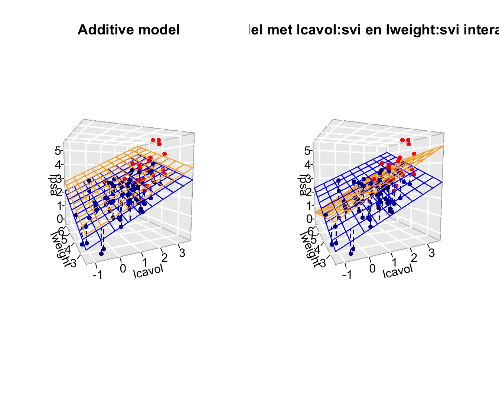
Figuur 11.4: Fit van het additieve model met de termen lcavol, lweight, svi (links) en het model met interacties lcavol, lweight, svi . lcavol:svi, lweight:svi (rechts). De rechtse figuur toont duidelijk dat de interactie er nu voor zorgt dat de associaties tussen de response <-> het log-tumorvolume en de response <-> het log-gewicht afhankelijk is van de status van de zaadblaasjes. De interacties zorgen voor andere hellingen bij patiënten met (rood) en zonder invasie (blauw) van de zaadblaasjes. Voor het additieve model (links) zien we enkel een verschuiving van het regressievlak, maar parallelle hellingen. Het hoofdeffect voor een factor variabele zorgt m.a.w. voor een ander intercept.
Merk op dat de helling voor lcavol groter is bij patiënten met invasie van de zaadblaasjes dan bij patiënten zonder invasie van de zaadblaasjes en dat de helling voor lweight van teken veranderd. We merken verder op dat beide interactie-termen opnieuw niet significant.
11.5.2 Interactie tussen twee continue variabelen
Het zou ook kunnen dat de associatie tussen lpsa en lcavol afhangt van het prostaatgewicht. De gemiddelde toename in lpsa tussen patiënten die één eenheid van log-tumorvolume verschillen zou bijvoorbeeld lager kunnen zijn voor patiënten met een hoog prostaatgewicht dan bij patiënten met een laag prostaatgewicht. Het effect van het tumorvolume op de prostaat antigeen concentratie hangt in dit geval af van het prostaatgewicht.
Om een dergelijke of tussen 2 variabelen \(X_v\) en \(X_w\) statistisch te modelleren, kan men het product van beide variabelen in kwestie aan het model toevoegen:
wanneer het log-prostaatgewicht \(X_w=c\) en de \(X_s=x_s\) status ongewijzigd blijven. Merk op dat het ‘effect’ van een wijzing in het tumorvolume bij constant log-prostaat gewicht nu inderdaad afhankelijk is van de hoogte van het log-prostaatgewicht \(x_w\).
We schatten nu opnieuw de parameters van het model in R.
lmVWS_IntVW <-lm(lpsa~lcavol + lweight + svi + lcavol:lweight ,prostate)summary(lmVWS_IntVW)
Call:
lm(formula = lpsa ~ lcavol + lweight + svi + lcavol:lweight,
data = prostate)
Residuals:
Min 1Q Median 3Q Max
-1.65886 -0.44673 0.02082 0.50244 1.57457
Coefficients:
Estimate Std. Error t value Pr(>|t|)
(Intercept) -0.6430 0.7030 -0.915 0.36278
lcavol 1.0046 0.5427 1.851 0.06734 .
lweight 0.6146 0.1961 3.134 0.00232 **
sviinvasion 0.6859 0.2114 3.244 0.00164 **
lcavol:lweight -0.1246 0.1478 -0.843 0.40156
---
Signif. codes: 0 '***' 0.001 '**' 0.01 '*' 0.05 '.' 0.1 ' ' 1
Residual standard error: 0.7179 on 92 degrees of freedom
Multiple R-squared: 0.6293, Adjusted R-squared: 0.6132
F-statistic: 39.05 on 4 and 92 DF, p-value: < 2.2e-16
De output van het model geeft een schatting van -0.125 voor de interactie \(\beta_{vw}\) tussen het log-tumorvolume en het log-prostaatgewicht. Dat betekent dat de gemiddelde toename in lpsa tussen patiënten met een verschil in het log-tumorvolume maar met eenzelfde prostaatgewicht afhankelijk zal zijn van het prostaatgewicht. In het bijzonder suggereert de output dat patiënten die 1% verschillen in het tumorvolume maar hetzelfde log prostaat gewicht hebben gemiddeld (\(1.005-0.125 \times x_w\))% verschillen in prostaat antigeen concentratie (interpretatie volgt uit log transformatie van de response en tumorvolume). Patiënten die 1% verschillen in tumorvolume en die een log-prostaatgewicht hebben van 3 zullen gemiddeld 0.631% in prostaat antigeen concentratie verschillen. Terwijl patiënten die 1% verschillen in tumorvolume en die een log-prostaatgewicht hebben van 4 gemiddeld een verschil van 0.506% in prostaat antigeen concentratie hebben. De associatie van het log-tumorvolume en de log prostaat antigeen concentratie neemt dus af met toenemend prostaatgewicht.
Grafische interpretatie wordt weergegeven in Figuur 11.5. Hier worden het additieve model en het model met de lcavol:lweight interactie vergeleken. De fit toont duidelijk aan dat de associate tussen lpsa en lcavol gelijk is ongeacht de grootte van het prostaatgewicht voor het additieve model (parallele lijnen in het regressieoppervlak). Voor het model met interactie is dat niet het geval, de associate (helling) neemt af met toenemend prostaatgewicht. We zien een analoog effect wanneer we focussen op de associatie tussen lpsa en lweight. De lpsa \(\leftrightarrow\) lweight associatie neemt af met toenemend log-tumorvolume.
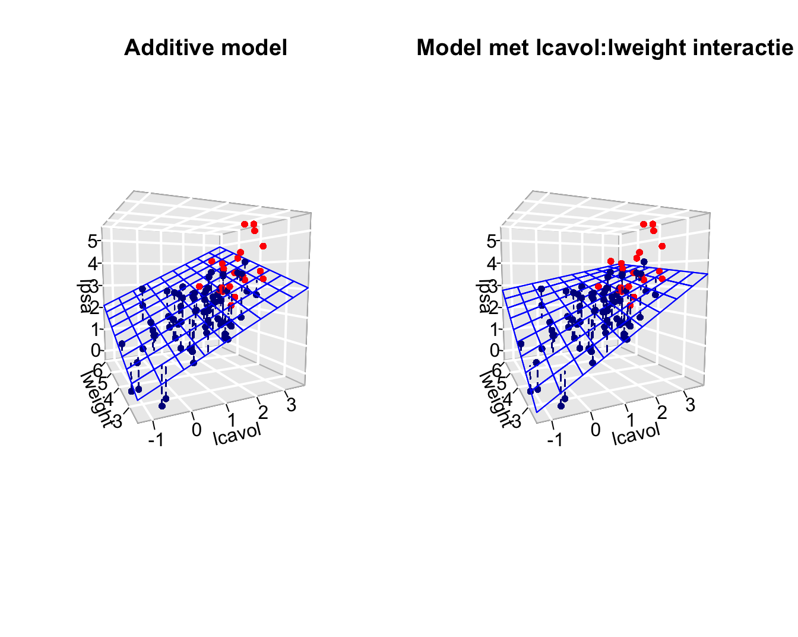
Figuur 11.5: Fit van het additieve model met de termen lcavol, lweight, svi (links) en het model met interactie lcavol, lweight, svi en lcavol:lweight (rechts). Merk op dat we enkel het regressieoppervlak weergeven voor patiënten zouder invasie van de zaadblaasjes. Dat voor patiënten met invasie van de zaadblaasjes is parallel met het getoonde oppervlak, maar ligt iets hoger. De rechtse figuur toont duidelijk dat de interactie ervoor zorgt dat de associatie tussen de response en het tumorvolume afhankelijk is van de hoogte van het prostaatgewicht en vice versa, dat zorgt voor een torsie in het regressievlak.
Merk op, dat het interactie effect dat geobserveerd wordt in de steekproef echter statistisch niet significant is (p=0.4). Gezien de hoofdeffecten die betrokken zijn in een interactie term niet los van elkaar kunnen worden geïnterpreteerd is de conventie om een interactieterm uit het model te verwijderen wanneer die niet significant is. Na verwijdering van de niet-significante interactieterm kunnen de hoofdeffecten worden geïnterpreteerd.
11.6 ANOVA Tabel
11.6.1 SSTot, SSR en SSE
Voor de enkelvoudige lineaire regressie hebben we in detail de decompositie van SSTot=SSR+SSE besproken. In deze sectie breiden we die resultaten uit naar meervoudige lineaire regressie.
De totale kwadratensom SSTot is gedefinieerd zoals voorheen,
De kwadratensom van de regressie (SSR) kan nog steeds geïnterpreteerd worden als de variabiliteit in de uitkomsten die verklaard kan worden door het regressiemodel.
Voor de vrijheidsgraden en de gemiddelde kwadratensommen geldt:
SSTot heeft \(n-1\) vrijheidsgraden en \(\text{SSTot}/(n-1)\) is een schatter voor de variantie van \(Y\) (van de marginale distributie van \(Y\)).
SSE heeft \(n-p\) vrijheidsgraden en \(\text{MSE}=\text{SSE}/(n-p)\) is een schatter voor de residuele variantie van \(Y\) gegeven de regressoren (i.e. een schatter voor de residuele variantie \(\sigma^2\) van de foutterm \(\epsilon\)).
SSR heeft \(p-1\) vrijheidsgraden en \(\text{MSR}=\text{SSR}/(p-1)\) is de gemiddelde kwadratensom van de regressie.
Een gevolg van de decompositie van SSTot is dat de determinatiecoëfficiënt blijft zoals voorheen, i.e.
is de fractie van de totale variabiliteit in de uitkomsten die verklaard wordt door het regressiemodel.
De teststatistiek
\[
F=\text{MSR}/\text{MSE}
\]
is onder
\[H_0:\beta_1=\ldots=\beta_{p-1}=0\]
verdeeld volgens een F-verdeling met \(p-1\) vrijheidsgraden in de teller en \(n-p\) vrijheidsgraden in de noemer \(F_{p-1;n-p}\).
De F-test test m.a.w. het effect van alle predictoren simultaan. Onder de nulhypothese is er geen associatie tussen de respons en elk van de predictoren. De output van deze F-test wordt standaard gegeven onderaan in de summary output.
summary(lmVWS)
Call:
lm(formula = lpsa ~ lcavol + lweight + svi, data = prostate)
Residuals:
Min 1Q Median 3Q Max
-1.72966 -0.45767 0.02814 0.46404 1.57012
Coefficients:
Estimate Std. Error t value Pr(>|t|)
(Intercept) -0.26807 0.54350 -0.493 0.62301
lcavol 0.55164 0.07467 7.388 6.3e-11 ***
lweight 0.50854 0.15017 3.386 0.00104 **
sviinvasion 0.66616 0.20978 3.176 0.00203 **
---
Signif. codes: 0 '***' 0.001 '**' 0.01 '*' 0.05 '.' 0.1 ' ' 1
Residual standard error: 0.7168 on 93 degrees of freedom
Multiple R-squared: 0.6264, Adjusted R-squared: 0.6144
F-statistic: 51.99 on 3 and 93 DF, p-value: < 2.2e-16
We zien dat de algemene nulhypothese heel significant kan worden verworpen. Minstens 1 predictor is extreem significant geassocieerd met de respons. In de individuele t-testen zien we dat elk van de predictoren een sterk significante associatie vertonen.
11.6.2 Extra Kwadratensommen
We kunnen een stap verder gaan en voor iedere individuele regressor een kwadratensom definiëren. Er zijn echter verschillende mogelijkheden.
Beschouw de volgende twee regressiemodellen voor regressoren \(x_1\) en \(x_2\):
\[
Y_i = \beta_0+\beta_1 x_{i1} + \epsilon_i,
\]
met \(\epsilon_i\text{ iid } N(0,\sigma_1^{2})\), en
Merk op dat we subscript 1 en 2 toegevoegd hebben aan de residuele varianties, maar dat we dezelfde \(\beta\)-parameternotatie gebruiken voor beide modellen; dit is om de notatie niet nodeloos complex te maken, maar je moet je ervan bewust zijn dat de \(\beta\)-parameters uit beide modellen niet noodzakelijk gelijk zijn.
Voor het eerste (gereduceerde) model geldt de decompositie
\[
\text{SSTot} = \text{SSR}_1 + \text{SSE}_1
\]
en voor het tweede (niet-gereduceerde) model
\[
\text{SSTot} = \text{SSR}_2 + \text{SSE}_2
\]
(SSTot is uiteraard dezelfde in beide modellen omdat dit niet afhangt van het regressiemodel).
Definitie extra kwadratensom De extra kwadratensom (Engels: extra sum of squares) van predictor \(x_2\) t.o.v. het model met enkel \(x_1\) als predictor wordt gegeven door
Merk eerst op dat \(\text{SSE}_1-\text{SSE}_2=\text{SSR}_2-\text{SSR}_1\) triviaal is gezien de decomposities van de totale kwadratensommen.
De extra kwadratensom \(\text{SSR}_{2\mid 1}\) kan eenvoudig geïnterpreteerd worden als de extra variantie van de uitkomst die verklaard kan worden door regressor \(x_2\) toe te voegen aan een model waarin regressor \(x_1\) reeds aanwezig is.
Met dit nieuw soort kwadratensom kunnen we voor het model met twee predictoren schrijven
De extra kwadratensom \(\text{SSR}_{s+1, \ldots, q\mid 1,\ldots, s}\) meet de extra variabiliteit in uitkomst die verklaard wordt door de predictoren \(x_{s+1}, \ldots, x_q\) toe te voegen aan een model met predictoren \(x_1,\ldots, x_{s}\). Anders gezegd: het meet de variatie van de uitkomsten verklaard door predictoren \(x_{s+1}, \ldots, x_q\) die niet verklaard wordt door de predictoren \(x_1,\ldots, x_{s}\).
We hebben hier SSR notatie gebruikt met lange indexen (bv. \(\text{SSR}_{s, \ldots, q\mid 1,\ldots, s-1}\)). Soms wordt de voorkeur gegeven aan de notatie
\[
\text{SSR}(s+1, \ldots, q\mid 1,\ldots, s).
\]
11.6.3 Type I Kwadratensommen
Stel dat \(p-1\) regressoren beschouwd worden, en beschouw een sequentie van modellen (\(s=2,\ldots, p-1\))
met \(\epsilon_i\text{ iid } N(0,\sigma^{2})\). De overeenkomstige kwadratensommen worden genoteerd als \(\text{SSR}_{s}\) en \(\text{SSE}_{s}\). De modelsequentie geeft ook aanleiding tot extra kwadratensommen \(\text{SSR}_{s\mid 1,\ldots, s-1}\). Deze laatste kwadratensom wordt een type I kwadratensom genoemd. Merk op dat deze afhangt van de volgorde (nummering) van regressoren.
Er kan aangetoond worden dat voor Model met \(s=p-1\) geldt
met \(\text{SSR}\) de kwadratensom van de regressie van het model met alle \(p-1\) regressoren.
De interpretatie van iedere individuele SSR term werd eerder gegeven, maar het is belangrijk om op te merken dat de interpretatie van iedere term afhangt van de volgorde van de regressoren in de sequentie van regressiemodellen.
Dus de type I kwadratensommen laten een decompositie van SSTot toe, maar de SSR-termen hangen af van de volgorde waarin de regressoren in het regressiemodel voorkomen.
Iedere type I SSR heeft betrekking op het effect van 1 regressor en heeft dus 1 vrijheidsgraad. Voor iedere type I SSR term kan een gemiddelde kwadratensom gedefinieerd worden als \(\text{MSR}_{j\mid 1,\ldots, j-1}=\text{SSR}_{j\mid 1,\ldots, j-1}/1\). De teststatistiek \(F=\text{MSR}_{j\mid 1,\ldots, j-1}/\text{MSE}\) is onder \(H_0:\beta_j=0\) met \(s=j\) verdeeld als \(F_{1;n-p}\).
Deze kwadratensommen worden standaard weergegeven door de anova functie in R.
11.6.4 Type III Kwadratensommen
Beschouw opnieuw het regressiemodel met \(p-1\) regressoren. De type III kwadratensom van regressor \(x_j\) wordt gegeven door de extra kwadratensom
\(\text{SSE}_2\) de residuele kwadratensom van regressiemodel met alle \(p-1\) regressoren.
\(\text{SSE}_1\) de residuele kwadratensom van regressiemodel met alle \(p-1\) regressoren, uitgezonderd regressor \(x_j\).
De type III kwadratensom \(\text{SSR}_{j \mid 1,\ldots, j-1,j+1,\ldots, p-1}\) kwantificeert dus het aandeel van de totale variantie van de uitkomst dat door regressor \(x_j\) verklaard wordt en dat niet door de andere \(p-2\) regressoren verklaard wordt.
De type III kwadratensom heeft ook 1 vrijheidsgraad omdat het om 1 \(\beta\)-parameter gaat.
Voor iedere type III SSR term kan een gemiddelde kwadratensom gedefinieerd worden als \(\text{MSR}_{j \mid 1,\ldots, j-1,j+1,\ldots, p-1}=\text{SSR}_{j \mid 1,\ldots, j-1,j+1,\ldots, p-1}/1\).
is onder \(H_0:\beta_j=0\) verdeeld as \(F_{1;n-p}\).
Deze kwadratensommen kunnen worden verkregen d.m.v. de Anova functie van het car package. In de Anova functie wordt hiervoor het argument ‘type=3’ gebruikt.
Merk op dat de p-waarden die we verkrijgen voor het testen van elk van de effecten identiek zijn als de p-waarden van de tweezijdige t-testen. De F-test o.b.v. een type III kwadratensom voor 1 parameter is equivalent met de tweezijdige t-test voor deze parameter.
11.7 Regressiediagnostieken
11.7.1 Multicollineariteit
Het is interessant om in de R output voor het model met lcavol:lweight interactie ook naar schattingen van de hoofdeffecten te kijken (Sectie 11.5.2). De waarden van de schattingen zijn niet alleen verschillend van wat we in het additieve model vonden, maar de standaardfouten zijn nu veel groter! De oorzaak moet gezocht worden in het probleem van multicollineariteit. Wanneer 2 predictoren sterk gecorreleerd zijn, dan delen ze voor een groot stuk dezelfde informatie en is het moeilijk om de afzonderlijke effecten van beiden op de uitkomst te schatten. Dit uit zich in het feit dat de computationele berekening van de kleinste kwadratenschatters onstabiel wordt, in die zin dat kleine wijzigingen aan de gegevens of het toevoegen of weglaten van een predictorvariabele een belangrijke impact kunnen hebben op de grootte, en zelfs het teken, van de geschatte regressieparameters. Een tweede effect van multicollineariteit is dat standaard errors bij de geschatte regressieparameters fel kunnen worden opgeblazen en de bijhorende betrouwbaarheidsintervallen bijgevolg zeer breed kunnen worden. Zolang men enkel predicties tracht te bekomen op basis van het regressiemodel zonder daarbij te extrapoleren buiten het bereik van de predictoren is multicollineariteit geen probleem.
We zien dat de correlatie inderdaad erg hoog is tussen het log-tumorvolume en de interactieterm. Het is gekend dat hogere orde termen (interacties en kwadratische termen) vaak een sterke correlatie vertonen.
Problemen als gevolg van multicollineariteit kunnen herkend worden aan het feit dat de resultaten onstabiel worden. Zo kunnen grote wijzigingen optreden in de parameters na toevoeging van een predictor, kunnen zeer brede betrouwbaarheidsintervallen bekomen worden voor sommige parameters of kunnen gewoonweg onverwachte resultaten worden gevonden. Meer formeel kan men zich een idee vormen van de mate waarin er van multicollineariteit sprake is door de correlaties te inspecteren tussen elk paar predictoren in het regressiemodel of via een scatterplot matrix die elk paar predictoren uitzet op een scatterplot. Dergelijke diagnostieken voor multicollineariteit zijn echter niet ideaal. Vooreerst geven ze geen idee in welke mate de geobserveerde multicollineariteit de resultaten onstabiel maakt. Ten tweede kan het in modellen met 3 of meerdere predictoren, zeg X1, X2, X3, voorkomen dat er zware multicollineariteit is ondanks het feit dat alle paarsgewijze correlaties tussen de predictoren laag zijn. Dit kan bijvoorbeeld optreden wanneer de correlatie hoog is tussen X1 en een lineaire combinatie van X2 en X3.
Bovenstaande nadelen kunnen vermeden worden door de te onderzoeken, die voor de \(j\)-de parameter in het regressiemodel gedefinieerd wordt als
\[
\textrm{VIF}_j=\left(1-R_j^2\right)^{-1}
\]
In deze uitdrukking stelt \(R_j^2\) de meervoudige determinatiecoëfficiënt voor van een lineaire regressie van de \(j\)-de predictor op alle andere predictoren in het model. De VIF heeft de eigenschap dat ze gelijk is aan 1 indien de \(j\)-de predictor niet lineair geassocieerd is met de andere predictoren in het model, en bijgevolg wanneer de \(j\)-de parameter in het model niet onderhevig is aan het probleem van multicollineariteit. De VIF is groter dan 1 in alle andere gevallen. In het bijzonder drukt ze uit met welke factor de geobserveerde variantie op de schatting voor de \(j\)-de parameter groter is dan wanneer alle predictoren onafhankelijk zouden zijn. Hoe groter de VIF, hoe minder stabiel de schattingen bijgevolg zijn. Hoe kleiner de VIF, hoe dichter de schattingen dus bij de gezochte populatiewaarden verwacht worden. In de praktijk spreekt men van ernstige multicollineariteit voor een regressieparameter wanneer haar VIF de waarde 10 overschrijdt.
We illustreren dat a.d.h.v. onderstaande voorbeeld.
Voorbeeld vetpercentage
Het percentage lichaamsvet van een persoon bepalen is een moeilijke en dure meting. Om die reden werden in het verleden verschillende studies opgezet met als doel het patroon te ontrafelen tussen werkelijk percentage lichaamsvet en verschillende, makkelijker te meten surrogaten. In een studie heeft men voor 20 gezonde vrouwen tussen 25 en 34 jaar het percentage lichaamsvet \(Y\), de dikte van de huidplooi rond de triceps \(X_1\), de dij-omtrek \(X_2\) en de middenarmomtrek \(X_3\) gemeten. Indien we een nauwkeurig regressiemodel kunnen opstellen op basis van de gegevens, dan zal ons dat toelaten om in de toekomst met behulp van dat model voorspellingen te maken voor het percentage lichaamsvet in gezonde vrouwen tussen 25 en 34 jaar, op basis van de huidplooi rond de triceps, de dij-omtrek en de middenarmomtrek.
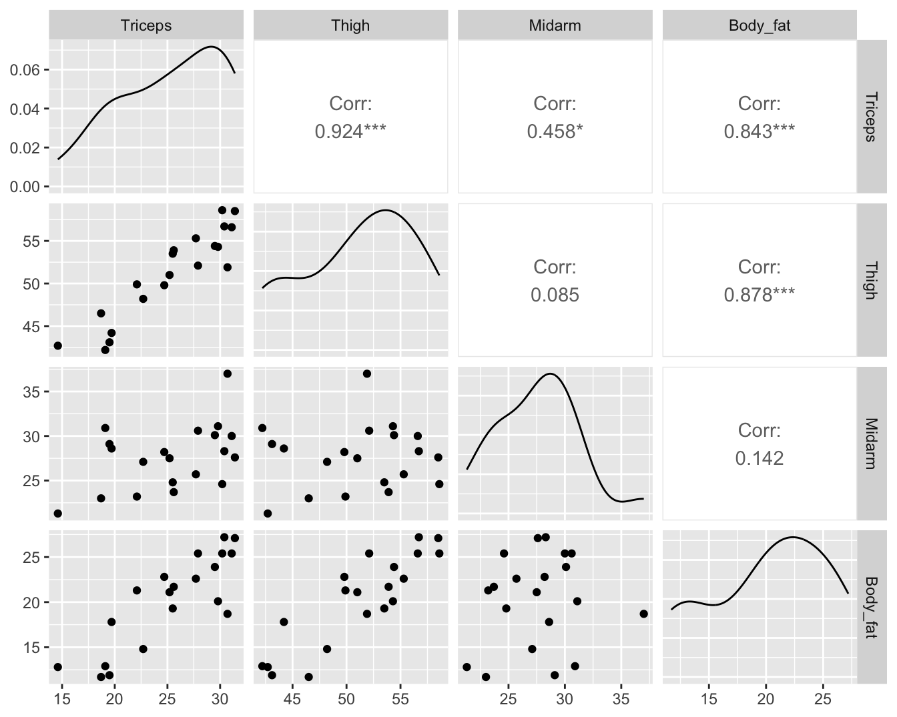
Figuur 11.6: Scatterplot matrix van de dataset bodyfat.
Wanneer we de 3 predictoren simultaan aan een regressiemodel toevoegen, bekomen we de volgende output.
Call:
lm(formula = Body_fat ~ Triceps + Thigh + Midarm, data = bodyfat)
Residuals:
Min 1Q Median 3Q Max
-3.7263 -1.6111 0.3923 1.4656 4.1277
Coefficients:
Estimate Std. Error t value Pr(>|t|)
(Intercept) 117.085 99.782 1.173 0.258
Triceps 4.334 3.016 1.437 0.170
Thigh -2.857 2.582 -1.106 0.285
Midarm -2.186 1.595 -1.370 0.190
Residual standard error: 2.48 on 16 degrees of freedom
Multiple R-squared: 0.8014, Adjusted R-squared: 0.7641
F-statistic: 21.52 on 3 and 16 DF, p-value: 7.343e-06
vif(lmFat)
Triceps Thigh Midarm
708.8429 564.3434 104.6060
Hoewel het model meer dan 80% van de variabiliteit in het vetpercentage kan verklaren en dat de F-test die test voor alle predictoren simultaan extreem significant is, is de associatie echter voor geen enkele predictor significant volgens de individuele t-testen. De scatterplot matrix in Figuur 11.6 geeft aan dat er multicollineariteit aanwezig is wat betreft de predictoren \(X_1\) en \(X_2\), maar niet meteen wat betreft de middenarmomtrek \(X_3\). Niettemin bekomen we erg hoge VIFs voor alle model parameters. Dit suggereert dat ook de middenarmomtrek gevoelig is aan ernstige multicollineariteit en bijgevolg dat scatterplot matrices inderdaad slechts een beperkt licht werpen op het probleem van multicollineariteit. De VIF varieert van 105-709, hetgeen aantoont dat de (kwadratische) afstand tussen de schattingen voor de regressieparameters en hun werkelijke waarden 105 tot 709 keer hoger kan worden verwacht dan wanneer er geen multicollineariteit zou zijn. Hoewel de paarsgewijze correlatie tussen Midarm en Triceps en Midarm en Thigh laag is, toont de regressie van Midarm op Triceps en Thigh echter aan dat beide variabelen samen 99% van de variabiliteit in de variabiliteit van Midarm kunnen verklaren, wat er voor zorgt dat er ook voor Midarm een extreem hoge multicollineariteit is.
lmMidarm <-lm(Midarm ~ Triceps + Thigh, data = bodyfat)summary(lmMidarm)
Call:
lm(formula = Midarm ~ Triceps + Thigh, data = bodyfat)
Residuals:
Min 1Q Median 3Q Max
-0.58200 -0.30625 0.02592 0.29526 0.56102
Coefficients:
Estimate Std. Error t value Pr(>|t|)
(Intercept) 62.33083 1.23934 50.29 <2e-16 ***
Triceps 1.88089 0.04498 41.82 <2e-16 ***
Thigh -1.60850 0.04316 -37.26 <2e-16 ***
---
Signif. codes: 0 '***' 0.001 '**' 0.01 '*' 0.05 '.' 0.1 ' ' 1
Residual standard error: 0.377 on 17 degrees of freedom
Multiple R-squared: 0.9904, Adjusted R-squared: 0.9893
F-statistic: 880.7 on 2 and 17 DF, p-value: < 2.2e-16
Einde voorbeeld
We evalueren nu de VIF in het prostaatkanker voorbeeld voor het additieve model en het model met interactie.
We zien dat de variance inflation factors voor het additieve model laag zijn, ze liggen allen dicht bij 1. Deze voor het model met interactie zijn echter hoog, voor lcavol en de interactie liggen ze respectievelijk op 76.2 en 80.6. Wat wijst op zeer ernstige multicollineariteit.
Merk op dat dit voor interactietermen vaak wordt veroorzaakt door het feit dat het hoofdeffect een andere interpretatie krijgt. Voor lcavol wordt dit b.v. het effect van het log-tumorvolume bij een log-prostaatgewicht van 0. Dit kan uiteraard niet voorkomen, alle log-prostaatgewichten liggen tussen 2.37 en 6.108 en berust dus op sterke extrapolatie. In de literatuur wordt daarom vaak voorgesteld om de variabelen te centreren rond het gemiddelde wanneer men hogere orde termen in het model opneemt. Dat is echter niet nodig, we weten immers dat het effect van het log-tumorvolume in het model met de lcavol:lweight interactie niet kan worden bestudeerd zonder het log-prostaatgewicht in rekening te brengen. We zullen in de practica zien dat we i.p.v. de data te centreren evengoed een test kunnen uitvoeren voor het effect van lcavol bij het gemiddelde log-prostaatgewicht, wat de interpretatie is voor het effect van lcavol bij het gecentreerde model.
11.7.2 Invloedrijke observaties
In onderstaande code wordt data gesimuleerd om de impact van outliers te illustreren.
Figuur 11.7: Impact van outliers op de regressie. Regressie zonder outliers (zwart), regressie met outlier 1 (groen), regressie met outlier 2 (rood), regressie met outlier 3 (blauw).
Een dataset bevat vaak extreme observaties voor zowel de uitkomst \(Y\) als de predictoren \(X\). Deze kunnen de geschatte regressieparameters en regressielijn sterk beïnvloeden. Dat is niet verwonderlijk vermits de regressielijn de gemiddelde uitkomst voorstelt in functie van \(X\) en gemiddelden zeer gevoelig zijn aan outliers. Figuur 11.7 toont een puntenwolk met 3 afwijkende observaties samen met 4 lineaire regressielijnen één zonder en één met elk van deze observaties. Merk op dat de regressielijn in bijzondere mate afwijkt wanneer observatie 3 wordt opgenomen in de dataset. Dit kan als volgt worden verklaard. De aanwezigheid van observatie 1 impliceert dat de regressielijn (en bijgevolg het intercept) naar boven wordt getrokken, maar heeft verder geen invloed op het patroon van de regressielijn. Observatie 2 is extreem, maar heeft geen impact op de regressielijn omdat ze het patroon van de rechte volgt. Hoewel observatie 3 niet met een zeer extreme uitkomst \(y\) overeenstemt, zal deze observatie toch het meest invloedrijk zijn omdat de predictorwaarde \(x\) en, in het bijzonder, de \((x,y)\)-combinatie zeer afwijkend is.
Het spreekt voor zich dat het niet wenselijk is dat een enkele observatie het resultaat van een lineaire regressie-analyse grotendeels bepaalt. We wensen daarom over diagnostieken te beschikken die ons toelaten om extreme observaties op te sporen. Residu’s geven weer hoe ver de uitkomst afwijkt van de regressielijn en kunnen bijgevolg gebruikt worden om extreme uitkomsten te identificeren. In het bijzonder hebben we eerder vermeld dat residu’s bij benadering Normaal verdeeld zijn wanneer het model correct is en de uitkomst Normaal verdeeld (bij vaste predictorwaarden) met homogene variantie. Of een residu extreem is, kan in dat opzicht geverifieerd worden door haar te vergelijken met de Normale verdeling. Stel bijvoorbeeld dat men over 100 observaties beschikt, dan verwacht men dat ongeveer 5% van de residu’s in absolute waarde extremer zijn dan 1.96\(\hat{\sigma}\). Indien men veel meer extreme residu’s observeert, dan is er een indicatie op outliers.
In de literatuur heeft men een aantal modificaties van residu’s ingevoerd met als doel deze nuttiger te maken voor de detectie van outliers. Studentized residu’s zijn een transformatie van de eerder gedefinieerde residu’s die \(t\)-verdeeld zijn met \(n-1\) vrijheidsgraden onder de onderstellingen van het model. Outliers kunnen aldus nauwkeuriger worden opgespoord door na te gaan of veel meer dan 5% van de studentized residu’s in absolute waarde het 97.5% percentiel van de \(t_{n-1}\)-verdeling overschrijden.
Extreme predictorwaarden kunnen in principe opgespoord worden via een scatterplot matrix voor de uitkomst en verschillende predictoren. Wanneer er meerdere predictoren zijn, hebben deze echter ernstige tekortkomingen omdat het een combinatie van meerdere predictoren kan zijn die ongewoon is en dit niet kan opgespoord worden via dergelijke grafieken. Om die reden is het veel zinvoller om de zogenaamde leverage (invloed, hefboom) van elke observatie te onderzoeken. Dit is een diagnostische maat voor de mogelijkse invloed van predictor-observaties (in tegenstelling tot de residu’s die een diagnostische maat vormen voor de invloed van de uitkomsten). In het bijzonder is de leverage van de \(i\)-de observatie een maat voor de afstand van predictorwaarde voor de \(i\)-de observatie tot de gemiddelde predictorwaarde in de steekproef. Hieruit volgt bijgevolg dat indien de leverage voor de \(i\)-de observatie groot is, ze predictorwaarden heeft die sterk afwijken van het gemiddelde. In dat geval heeft die observatie mogelijks ook grote invloed op de regressieparameters en predicties. Leverage waarden variëren normaal tussen \(1/n\) en 1 en zijn gemiddeld \(p/n\) met \(p\) het aantal ongekende parameters (intercept + \(p-1\) hellingen). Een extreme leverage wordt typisch aanschouwd als een waarde groter dan \(2p/n\).
11.7.3 Cook’s distance
Een meer rechtstreekse maat om de invloed van elke observatie op de regressie-analyse uit te drukken is de Cook’s distance. De Cook’s distance voor de \(i\)-de observatie is een diagnostische maat voor de invloed van die observatie op alle predicties of, equivalent, voor haar invloed op alle geschatte parameters. Men bekomt deze door elke predictie \(\hat{Y}_j\) die men op basis van het regressiemodel heeft bekomen voor de \(j\)-de uitkomst, \(j=1,...,n\), te vergelijken met de overeenkomstige predictie \(\hat{Y}_{j(i)}\) die men zou bekomen indien de \(i\)-de observatie niet gebruikt werd om het regressiemodel te fitten
Indien de Cook’s distance \(D_i\) groot is, dan heeft de \(i\)-de observatie een grote invloed op de predicties en geschatte parameters. In het bijzonder stelt men dat een extreme Cook’s distance het 50% percentiel van de \(F_{p,n-p}\)-verdeling overschrijdt.
Deze plots komen standaard bij diagnose van het lineair model. We evalueren dit voor het additieve model en het model met de lcavol:lweight interactie voor de prostaatkanker studie.
par(mfrow=c(2,2))plot(lmVWS,which=5)plot(lmVWS_IntVW,which=5)plot(cooks.distance(lmVWS),type="h",ylim=c(0,1),main="Additive model")abline(h=qf(0.5,length(lmVWS$coef),nrow(prostate)-length(lmVWS$coef)),lty=2)plot(cooks.distance(lmVWS_IntVW),type="h",ylim=c(0,1), main="Model with lcavol:lweight interaction")abline(h=qf(0.5,length(lmVWS_IntVW$coef),nrow(prostate)-length(lmVWS_IntVW$coef)),lty=2)
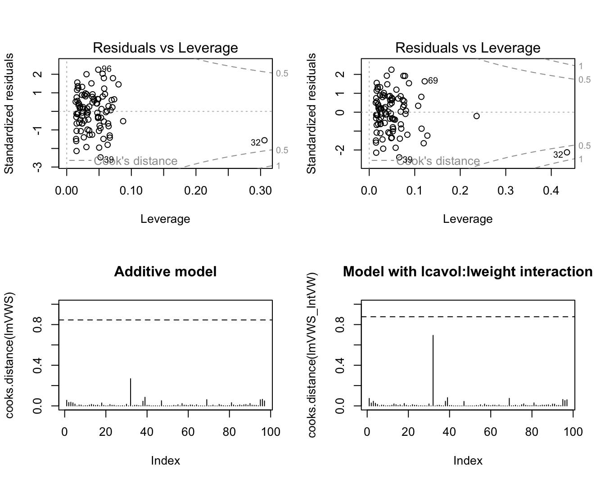
Figuur 11.8: Evaluatie van de invloed van individuele observaties op het additieve model (links) en het model met de lcavol:lweight interactie (rechts).
Het is duidelijk dat observatie 32 een grote leverage heeft. Het heeft in het model met interactie ook de grootste invloed van alle datapunten op de fit van het model.
Eenmaal men vastgesteld heeft dat een observatie invloedrijk is, kan men zogenaamde DFBETAS gebruiken om te bepalen op welke parameter(s) ze een grote invloed uitoefent. De DFBETAS van de \(i\)-de observatie vormen een diagnostische maat voor de invloed van die observatie op elke regressieparameter afzonderlijk, in tegenstelling tot de Cook’s distance die de invloed op alle parameters tegelijk evalueert. In het bijzonder bekomt men de DFBETAS voor de \(i\)-de observatie en de \(j\)-de parameter door de \(j\)-de parameter \(\hat{\beta}_j\) te vergelijken met de parameter \(\hat{\beta}_{j(i)}\) die men zou bekomen indien het regressiemodel gefit werd zonder de \(i\)-de observatie in de analyse te betrekken:
Uit bovenstaande uitdrukking volgt dat het teken van de DFBETAS voor de \(i\)-de observatie aangeeft of het weglaten van die observatie uit de analyse een stijging (DFBETAS\(<0\)) of daling (DFBETAS\(>0\)) in de overeenkomstige parameter veroorzaakt. In het bijzonder stelt men dat een DFBETAS extreem is wanneer ze 1 overschrijdt in kleine tot middelgrote datasets en \(2/\sqrt{n}\) overschrijdt in grote datasets.
par(mfrow=c(2,2))dfbetasPlots(lmVWS)
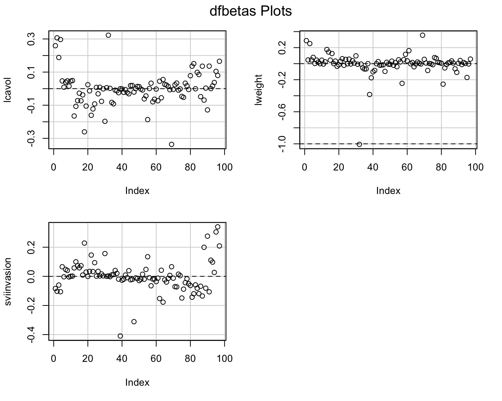
Figuur 11.9: DFBETAS voor additieve model in prostaatkanker.
par(mfrow=c(2,2))dfbetasPlots(lmVWS_IntVW)
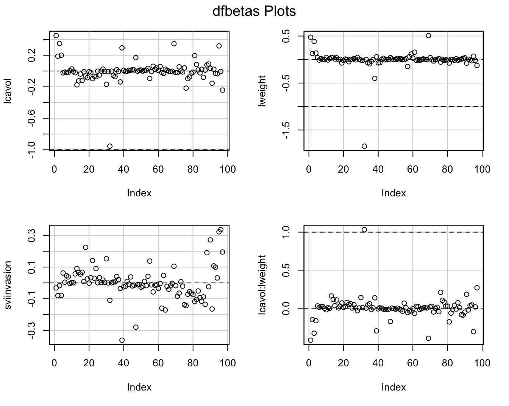
Figuur 11.10: DFBETAS voor model met lcavol:lweight interactie.
De Cooks distances en de DFBETAS plots geven aan dat observatie 32 het grootste effect heeft op de regressieparameters. Daarnaast heeft deze observatie ook een extreme “influence”.
Figuur 11.11: Boxplot met outlier voor prostaatgewicht.
Wanneer we het gewicht terugtransformeren naar de originele schaal zien we dat het prostaatgewicht voor deze patiënt 449.25 g bedraagt. De prostaat van een man heeft gewoonlijk een gewicht van 20-30 gram en het kan vergroten tot 50-100 gram. Een prostaatgewicht van meer dan 400 gram komt dus niet voor. De auteurs die de dataset uit de originele publicatie hebben opgenomen in een handboek, hebben gerapporteerd dat ze een tikfout hebben gemaakt en ze hebben het extreme prostaat gewicht later gecorrigeerd naar 49.25 gram, het gewicht dat in de originele publicatie werd gerapporteerd.
Ga zelf na welke invloed het corrigeren van het prostaatgewicht heeft op het geschatte regressiemodel.
11.8 Contrasten
Bij meer complexe algemene lineaire modellen wenst men dikwijls meerdere hypothesen te toetsen.
Bovendien vertalen de onderzoekshypotheses zich hierbij niet steeds in één parameter, maar in een lineaire combinatie van modelparameters.
Een lineaire combinatie van modelparameters wordt ook een contrast genoemd.
11.8.1 NHANES voorbeeld
Stel dat de onderzoekers de associatie tussen de leeftijd en de bloeddruk wensen te bestuderen bij Amerikaanse kinderen. Mogelijks is die associatie anders is bij jongens en meisjes.
De onderzoekers wensen de volgende onderzoeksvragen te beantwoorden:
Is er een associatie tussen leeftijd en de bloeddruk bij meisjes?
Is er een associatie tussen leeftijd en de bloeddruk bij jongens?
Is de associatie tussen leeftijd en de bloeddruk verschillend bij jongens dan bij meisjes?
11.8.2 Model
We fitten een model op basis van de gemiddelde systolische bloeddruk (BPSysAve) in functie van de leeftijd, geslacht en een interactie tussen leeftijd en geslacht voor volwassen blanke subjecten uit de NHANES studie.
library(NHANES)bpData <- NHANES |>filter( Age >=6& Age <=18&!is.na(BPSysAve) &!is.na(AgeMonths))mBp1 <-lm(BPSysAve ~ AgeMonths*Gender, bpData)dim(bpData)
[1] 703 76
par(mfrow =c(2,2))plot(mBp1)
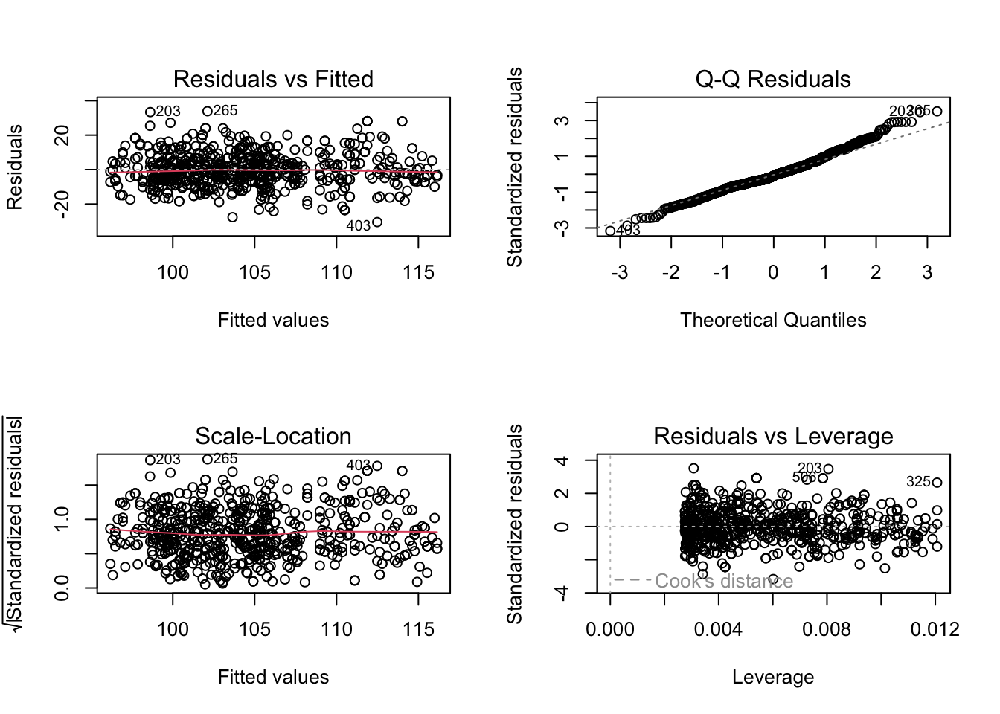
Aannames ?
lineariteit lijkt ok
Aanname van gelijkheid van variantie lijkt voldaan
Lichte afwijkeingen van normaliteit: indicatie voor lichtjes scheve verdeling met staart naar rechts.
Grote dataset (n = 703) we kunnen steunen op de CLT
11.8.3 Besluitvorming
summary(mBp1)
Call:
lm(formula = BPSysAve ~ AgeMonths * Gender, data = bpData)
Residuals:
Min 1Q Median 3Q Max
-30.487 -5.871 -0.890 5.265 33.882
Coefficients:
Estimate Std. Error t value Pr(>|t|)
(Intercept) 92.90682 2.29792 40.431 < 2e-16 ***
AgeMonths 0.05943 0.01371 4.336 1.66e-05 ***
Gendermale -11.35031 3.25237 -3.490 0.000514 ***
AgeMonths:Gendermale 0.09294 0.01943 4.783 2.11e-06 ***
---
Signif. codes: 0 '***' 0.001 '**' 0.01 '*' 0.05 '.' 0.1 ' ' 1
Residual standard error: 9.65 on 699 degrees of freedom
Multiple R-squared: 0.1939, Adjusted R-squared: 0.1904
F-statistic: 56.04 on 3 and 699 DF, p-value: < 2.2e-16
De onderzoeksvragen vertalen zich in de volgende nullhypotheses:
Associatie tussen bloeddruk en leeftijd bij de meisjes?
Wat we kunnen evalueren door twee modellen te vergelijken. Een model met enkel het gender effect en het volledige model met Gender, Age en de Gender x Age interactie.
Als we deze hypothese kunnen verwerpen voeren we posthoc analyses uit voor elk van de 3 contrasten.
Merk op dat de glht functie ons toelaat om de contrasten te definiëren door de nulhypotheses expliciet te formuleren in een karaktervector waarbij gebruik wordt gemaakt van de naam van de pararameters in het model.
11.8.3.3 Conclusie
We kunnen besluiten dat er een extreem significante associatie is tussen leeftijd en de bloeddruk (p << 0.001). De bloeddruk bij twee meisjes die in leeftijd verschillen is gemiddeld 0.06 mm Hg hoger per maand leeftijdsverschil bij het oudere meisje (p << 0.001, 95% BI [0.03, 0.09]. De bloeddruk bij jongens die in leeftijd verschillen is gemiddeld 0.15 mm Hg hoger per maand leeftijdsverschil bij de oudere jongen. (p << 0.001, 95% BI [0.12, 0.18]. Het gemiddelde bloeddrukverschil tussen personen in leeftijd verschillen is gemiddeld 0.09 mm Hg/maand hoger bij jongens dan meisjes (p << 0.001, 95% BI [0.05, 0.14]).
11.9 Factoriële proeven
11.9.1 Introductie
In deze sectie illustreren we hoe experimenten met een factoriële proefopzet geanalyseerd kunnen worden met het algemeen lineair model.
We focussen hierbij op een two-way anova design waarbij we een continue response modelleren in functie van twee categorische predictor variabelen (factoren).
Er zou een interactie kunnen zijn tussen behandeling en gif, het effect van het gif op de overlevingstijd hangt dan af van de behandeling en vice versa.
De boxplots geven ook aan dat de data heteroscedastisch zijn.
11.9.3 Model
We modelleren de data met een hoofdeffect voor gif en behandeling en een gif \(\times\) behandeling interactie.
met \(i = 1, \ldots, n\), \(n=48\), en, \(x_{iII}\), \(x_{iIII}\), \(x_{iB}\), \(x_{iC}\) en \(x_{iD}\) dummy variabelen voor respectievelijk gif II, III, behandeling B, C, en D.
De errors zijn heteroscedastisch. De residu plot suggereert een relatie tussen gemiddelde en variantie. De QQ-plot suggereert dat de verdeling mogelijks bredere staarten heeft dan de normale verdeling.
Log transformatie verwijdert heteroscedasticiteit niet volledig.
11.9.3.1.2 Reciproke transformatie
rats |>ggplot(aes(x=treat,y=1/time)) +geom_boxplot(outlier.shape=NA) +geom_jitter() +facet_wrap(~poison) +ylab ("rate of dying (1/h)")
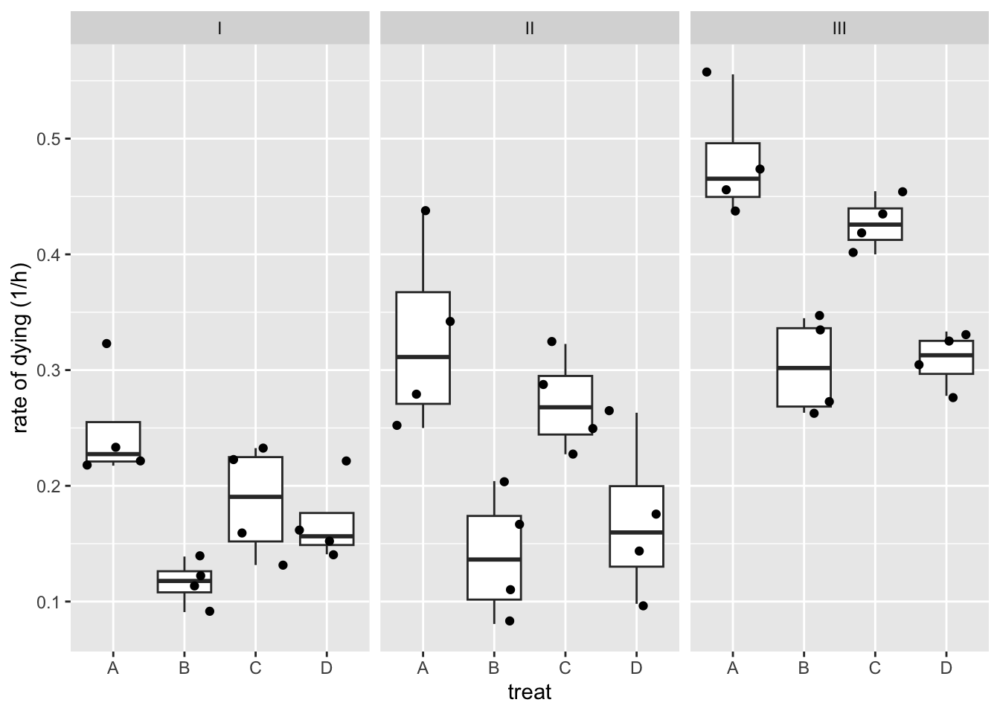
rats3 <-lm(1/time~poison*treat, rats)plot(rats3)
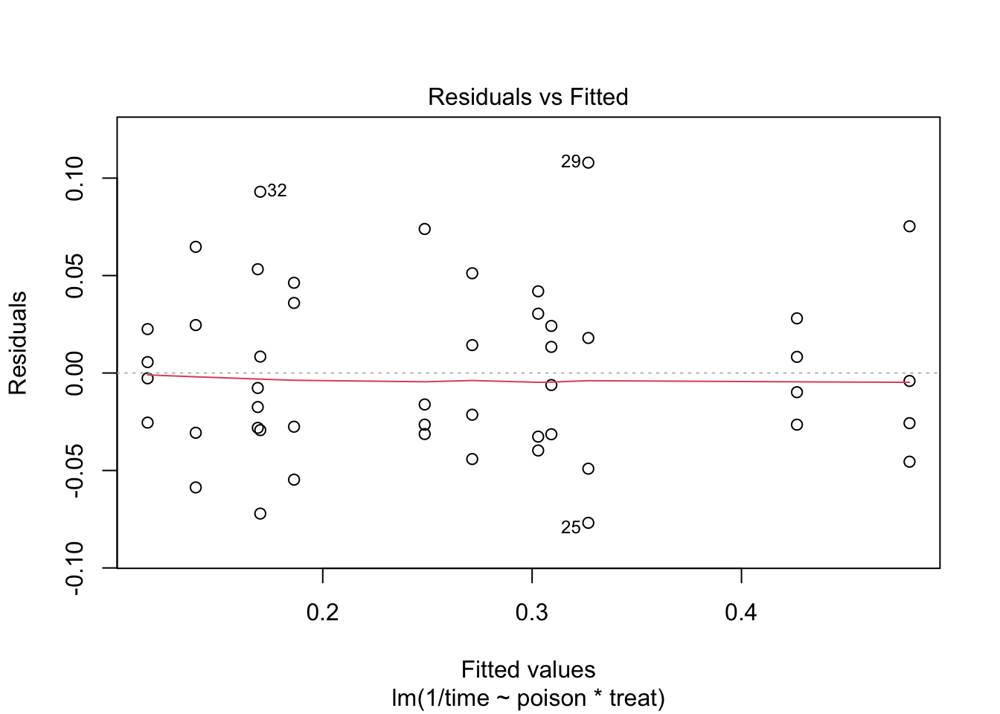
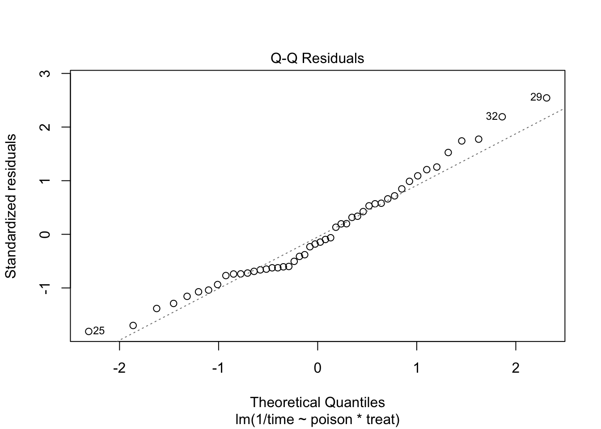
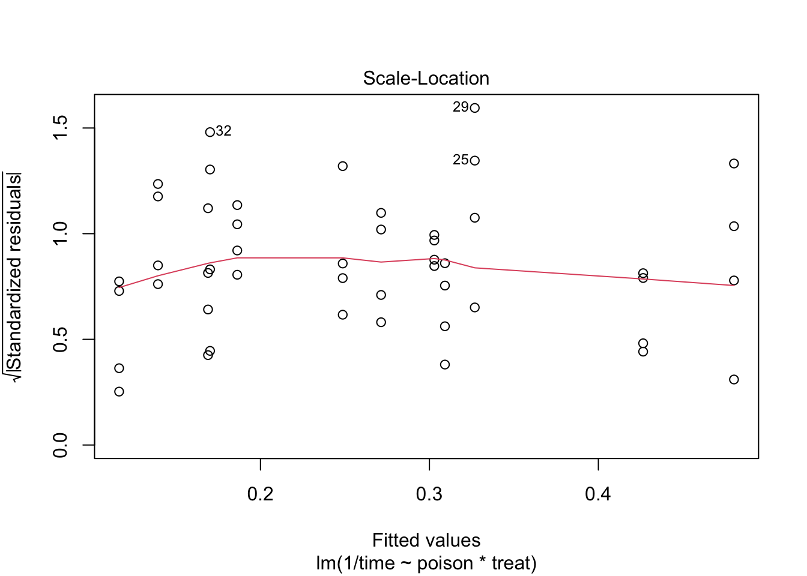
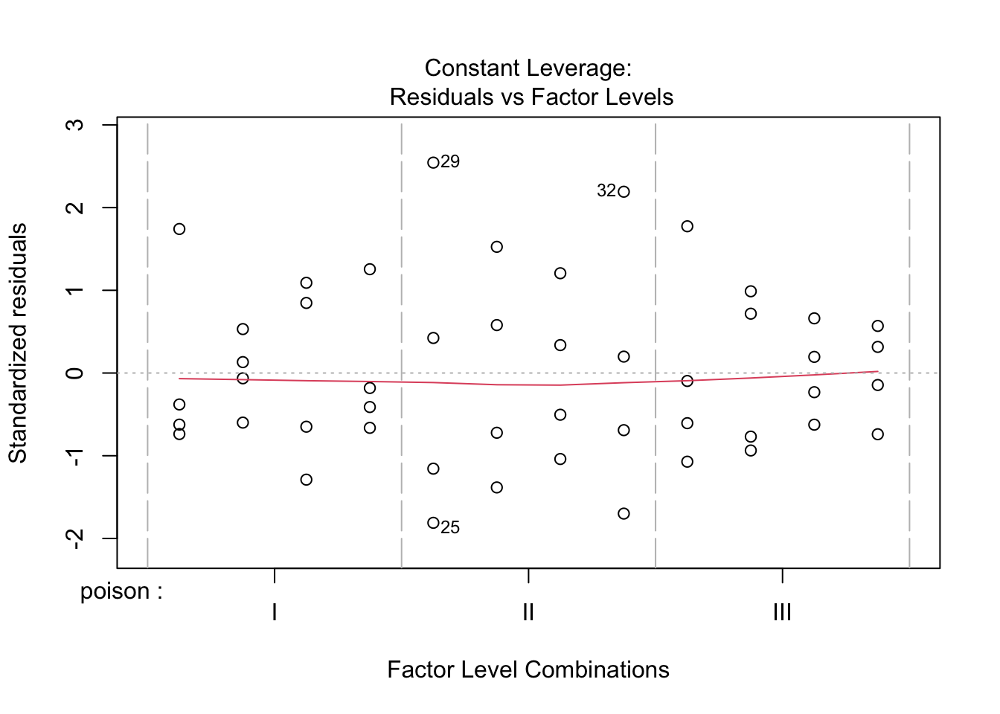
De reciproke transformatie lijkt beter. Transformaties bemoeilijken soms de interpretatie. Hier kan de reciproke transformatie echter worden geïnterpreteerd als de “snelheid van sterven” (rate of dying).
11.9.4 Inferentie
Er zijn meerdere interactie termen in het model. We kunnen deze eerst samen testen a.d.h.v. van de resultaten uit de anova tabel.
11.9.4.2 Niet-significante interactie term in het model weerhouden
Het aanvaarden van de nulhypothese dat er geen interactie is, is een zwakke conclusie. Het zou immers kunnen dat de power van het experiment te klein is om de interactie op te pikken. We kunnen er ook voor kiezen om de niet significante interactie term in het model te laten.
Als de interactie significant zou zijn geweest, betekent dit dat het effect van het gif op de snelheid van sterven afhangt van de behandeling en vice versa. Dan kunnen we het effect van het type gif en de behandeling op de overlevingstijd niet afzonderlijk bestuderen.
In onze studie was de interactie echter niet significant. Het effect van het gif (II-I, III-I en III-II) verandert dus niet significant volgens de behandeling (A, B, C, en D) en vice versa. Voor onze dataset lijkt het dus zinvol om
de effectgrootte voor de paarsgewijze vergelijkingen tussen de verschillende giffen (II-I, III-I en III-II) te schatten door ze uit te middelen over alle behandelingen (A, B, C, en D), en,
de effectgrootte voor de paarsgewijze vergelijkingen tussen de verschillende behandelingen (B-A, C-A, D-A, C-B, D-B en D-C) te schatten door ze uit te middelen over alle giffen (I, II, III).
Dat zou ons gelijkaardige schattingen van de effectgroottes moeten geven als deze voor het additieve model waarbij we de interactie term uit het model hadden geweerd.
B.v. voor gif III vs gif II zou dat in volgende contrast resulteren:
De geschatte effectgroottes zijn inderdaad exact gelijk als bij het model zonder interactie omdat het experiment gebalanceerd is.
De standaard errors verschillen wel lichtjes. Dat is het gevolg van de errors die verschillen tussen beiden modellen alsook het aantal vrijheidsgraden van de errors (n-p).
Additive_coef Additive_se Int_coef int_se
poison: II - I 0.047 0.017 0.047 0.017
poison: III - I 0.200 0.017 0.200 0.017
poison: III - II 0.153 0.017 0.153 0.017
treat: B - A -0.166 0.020 -0.166 0.020
treat: C - A -0.057 0.020 -0.057 0.020
treat: D - A -0.136 0.020 -0.136 0.020
treat: C - B 0.109 0.020 0.109 0.020
treat: D - B 0.030 0.020 0.030 0.020
treat: D - C -0.079 0.020 -0.079 0.020
11.9.5 Conclusie
Er is een extreem significant effect van het type gif en de behandeling op de snelheid van sterven bij ratten (p << 0.001).
De interactie tussen gif en behandeling is niet significant (p = 0.387).
De snelheid van sterven is gemiddeld 0.2h\(^{-1}\) en 0.15h\(^{-1}\) hoger voor ratten die blootgesteld worden aan gif III dan aan respectievelijk gif I en II (beide p << 0.001, 95% BI III-I: [0.15, 0.25]h\(^{-1}\), 95% BI III-II: [0.1, 0.2]h\(^{-1}\)) De gemiddelde snelheid van sterven was niet significant verschillend tussen ratten die werden blootgesteld aan gif I en gif II (p=0.074).
De snelheid van sterven is gemiddeld 0.17h\(^{-1}\) en 0.14h\(^{-1}\) hoger na behandeling A dan na behandeling B en D (p << 0.001, 95% BI B-A: [-0.22, -0.11]h\(^{-1}\), 95% BI D-A: [-0.19, -0.08]h\(^{-1}\)). De snelheid van sterven is gemiddeld 0.11h\(^{-1}\) en 0.08h\(^{-1}\) hoger na behandeling C dan respectievelijk na behandeling B en D (C-B: p << 0.001, 95% CI [0.05, 0.17]h\(^{-1}\) , D-C: p = 0.003, 95% CI [-0.14, -0.02]h\(^{-1}\)). De gemiddelde snelheid van sterven is niet significant verschillend tussen ratten behandeld met behandeling C vs A, en D vs B (p- waarden respectievelijk p = 0.051 en p = 0.61).